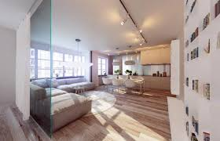

 charmant loft de 2 pièces au dernier étage avec ascenseur 36m²
Louer à partir de 1 400 €
A quelque mètres du jardin du Ranelagh et du Bois de Boulogne:
Proche de l'OCDE et de toutes commodités (Métro la muette, RER Avenue Henri Martin)
, Venez découvrir au 5ème étage d'un Magnifique immeuble ancien (années 1890),
ce charmant 2 pièces très calme avec vue dégagée donnant sur l'OCDE.
Il se compose d'une cuisine ouverte équipée (plaques vitrocéramiques
et autre petit électroménager). D'un séjour spacieux, d'une chambre,
d'une salle de bains avec WC. Chauffage et eau chaude collectif. Immeuble avec ascenseur.
Parquet au sol, double vitrage, peinture refaite à neuf.
Appartement lumineux et sans aucun vis a vis.
Idéal dans le secteur. A voir rapidement.. Honoraires: Visite,
constitution du dossier, rédaction du bail et d'état des lieux d'entrée pour:
Une location vide en résidence principale (loi ALUR).
Une location, en résidence secondaire, ou logement de fonction: 1 mois de loyer TTC.